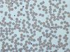

platelet

Definition: Platelets or thrombocytes (from Greek θρόμβος, "clot" and κύτος, "cell") are a component of blood whose function (along with the coagulation factors) is to react to bleeding from blood vessel injury by clumping, thereby initiating a blood clot. Platelets have no cell nucleus; they are fragments of cytoplasm that are derived from the megakaryocytes of the bone marrow or lung, which then enter the circulation. Platelets are found only in mammals, whereas in other vertebrates (e.g. birds, amphibians), thrombocytes circulate as intact mononuclear cells.: 3
Source: Wikipedia
Wikipedia Page
Wikidata Page
Occurs in: